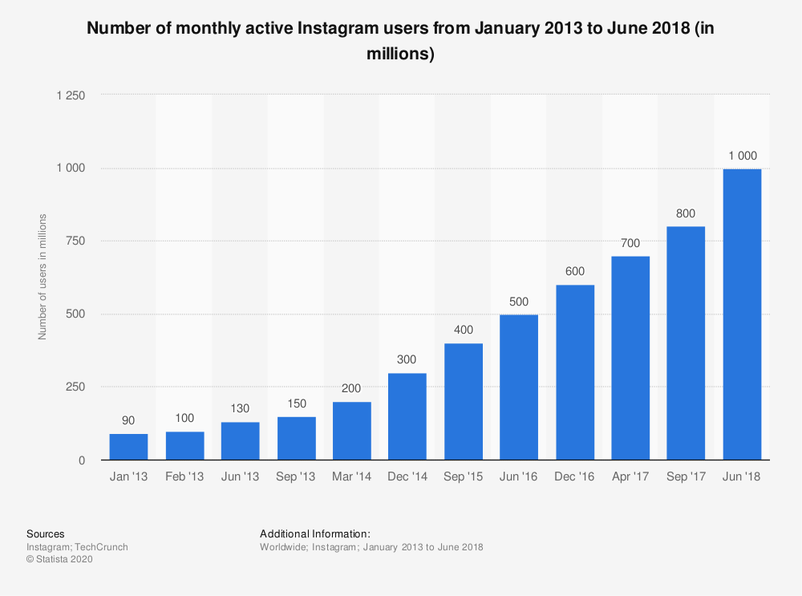

In these difficult times, health officials, scientists, and others are providing necessary information on how to stay safe. However, there are some people who take to social media, spreading misinformation with no evidence. People want to understand as much as they can in these times, but the constant contradictions are just confusing. They don’t know what to believe because they see so many different views on social media.
Social Media Apps
While most platforms have made efforts to regulate the flow of information, much of it is still visible. There is such an overwhelming amount that the work of health officials has been made difficult. The information is “usually propagated for political gain”1 because it can portray someone in a bad light. For instance, a film called “Plandemic” states that the virus is just a conspiracy to drive people to vaccinate themselves. However, this has already been banned on most platforms.
The anti-vaccine movement is only becoming a problem now because there are many more people on social media than ever. When Ebola began to spread, the World Health Organization was able to spread pamphlets to get the correct information in people’s hands. This isn’t working now due the “tailoring [of] anti-science messages to groups that believe them”2. In other words, dissenters are targeting people with an unfactual message that they know will be agreed with. Everyone needs to pay attention to where they are getting their information from and ensure that it is supported by facts.
Increasing Number of Active Instagram Users (2013-2018)
From Statista
We will never be rid of all the misinformers, so people need to instead look to reliable sources. Although, social media platforms still have a job to prohibit false ads, messages, etc., and display sources that use facts, such as the WHO. Confusion cannot be allowed to continue; the scientific consensus on the coronavirus needs to be distributed. The virus is an ultra-sensitive topic that requires careful research to completely understand.
Sources
Pazzanese, Christina. “Social Media Used to Spread, Create COVID-19 Falsehoods.” Harvard Gazette, Harvard Gazette, 11 May 2020, news.harvard.edu/gazette/story/2020/05/social-media-used-to-spread-create-covid-19-falsehoods/.
Duffy, Clare. “How Health Officials and Social Media Are Teaming up to Fight the Coronavirus 'Infodemic'.” CNN, Cable News Network, 1 Mar. 2020, www.cnn.com/2020/03/01/tech/coronavirus-social-media-reliable-sources/index.html.